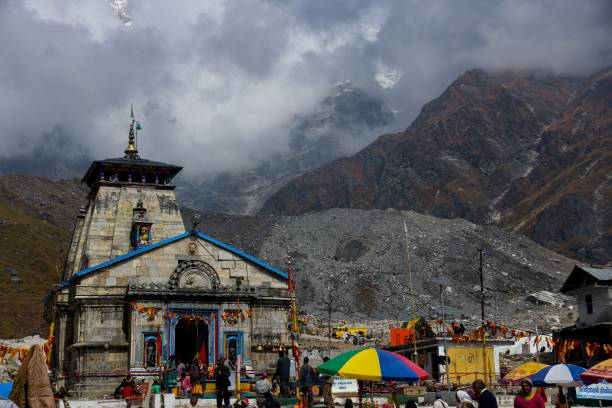
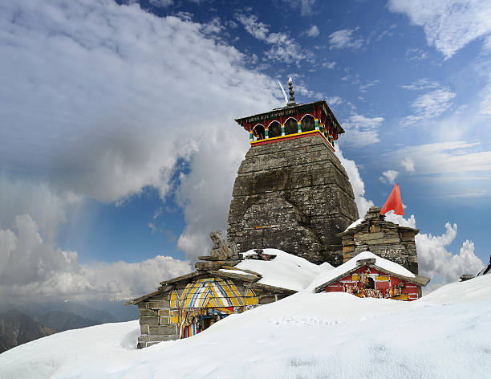
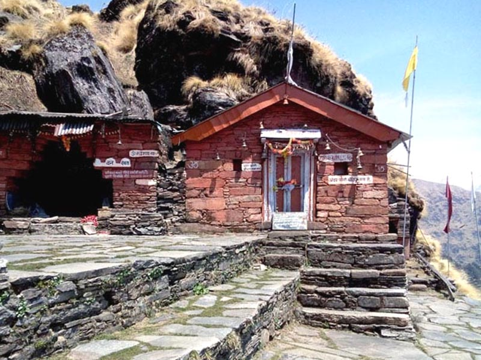
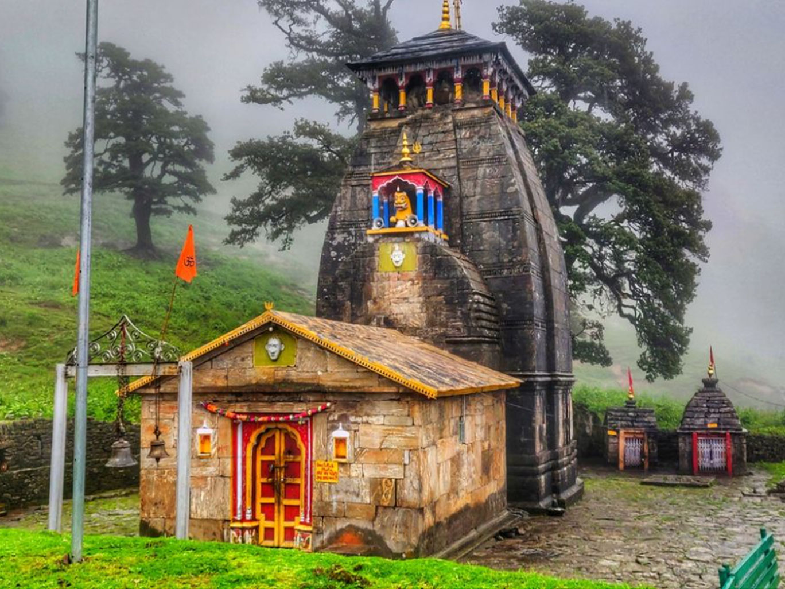
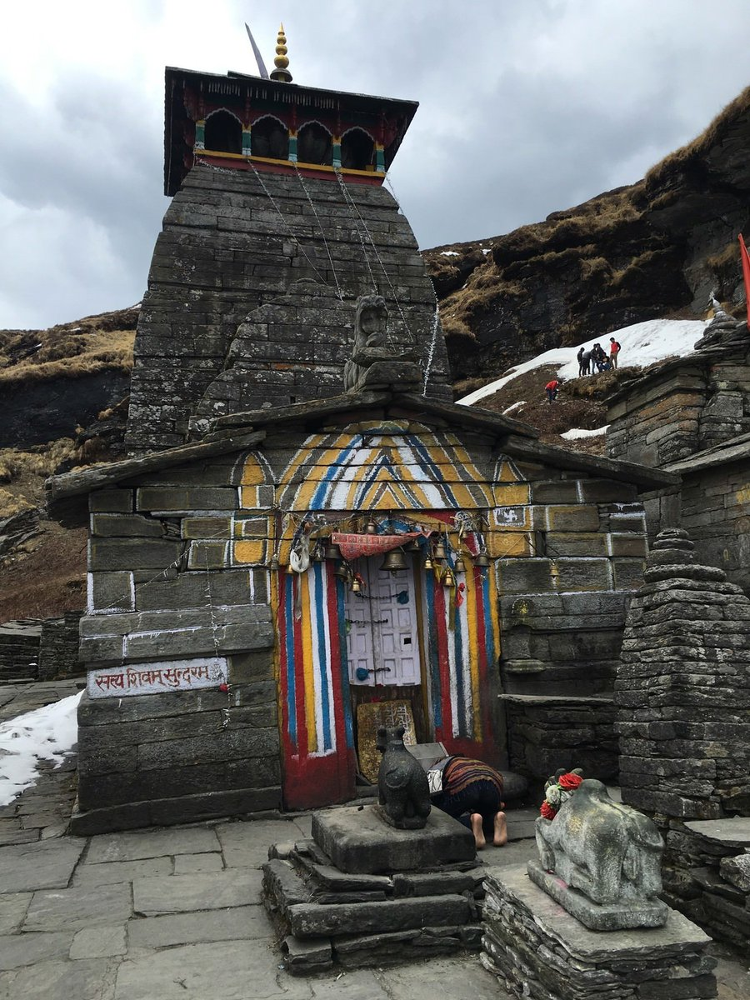

Discover the five most sacred shrines of Lord Shiva hidden in the mystical hills of Uttarakhand. Each temple has its own unique story connected to the Mahabharata legends and divine miracles.

The holiest among Panch Kedar, Kedarnath temple is set against the stunning backdrop of the mighty Kedarnath range. Lord Shiva is worshiped here as the 'Lord of the Field'.

The highest Shiva temple in the world. It is believed to be built by the Pandavas to seek forgiveness from Lord Shiva.

Set amidst a dense forest, Rudranath is where Shiva's face is worshiped. The trek to Rudranath offers breathtaking natural beauty.

Here the navel (nabhi) of Lord Shiva is worshiped. This temple is known for its peaceful location surrounded by snow-capped peaks.

The only Panch Kedar temple accessible throughout the year. At Kalpeshwar, Lord Shiva is worshiped in his hair form (jata).